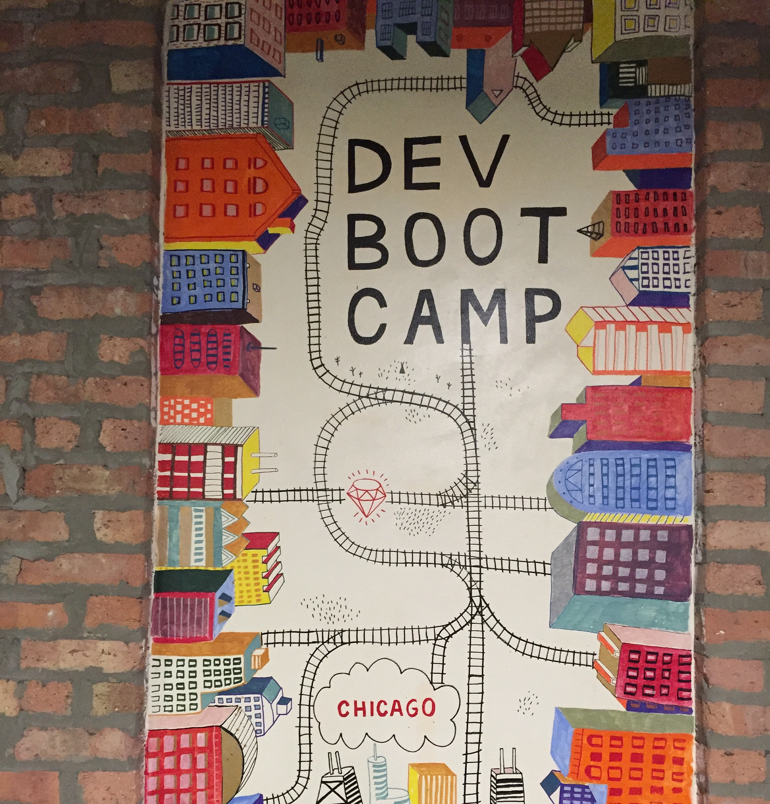

In college, I was passionate about language, and studied English lit and Japanese (こんにちは！) After graduating, I wanted to pursue my passion for language, and discovered programming.

I attended Dev Bootcamp in Chicago and learned both hard and soft skills to launch my career as a developer. I work mostly in Ruby on Rails, but am excited to start branching out to new languages and start working toward full-stack status. For instance, I've started playing around with Python!